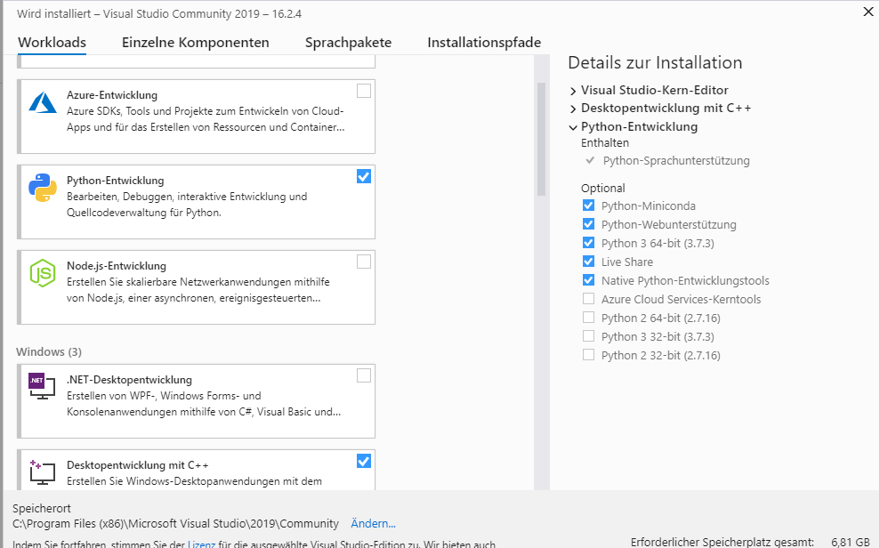
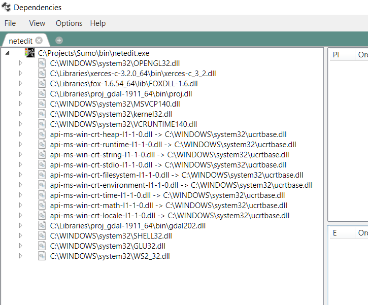
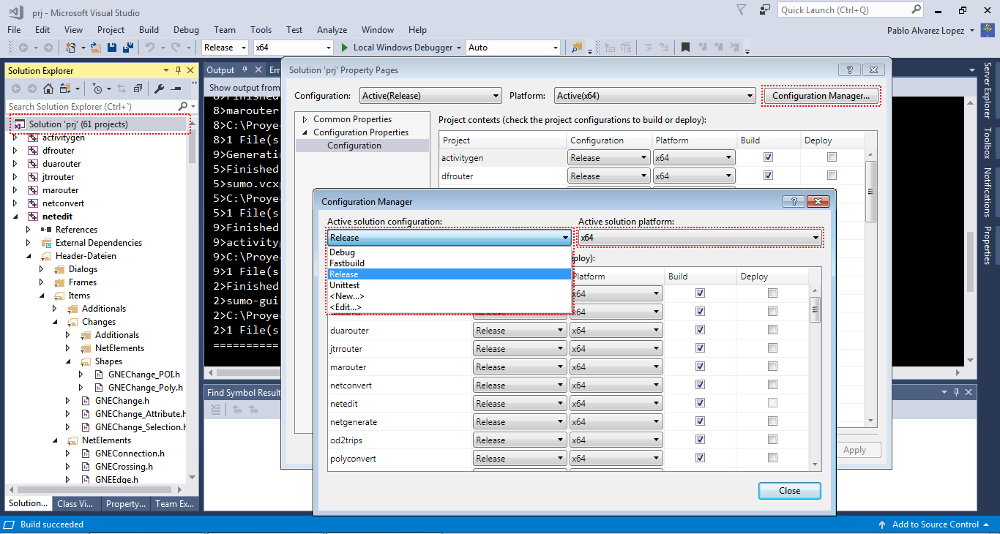

This document describes how to build SUMO under MS-Windows using only freely available (this does not mean "open source") tools. Instructions on how to build SUMO on Windows using an Open Source toolchain are included in our building on Linux pages. Please note that you may also download pre-built Windows binaries.
Recommended Windows setup#
- Download Visual C++ Community Edition
- Start the installer and select:
- Python Development (including native tools)
- C++ for desktop
- Start the installer and select:

- clone https://github.com/eclipse/sumo or open your existing local SUMO folder
- go to team explorer
- choose Manage Connections, then "Local Git"->Clone https://github.com/DLR-TS/SUMOLibraries
- now be patient until CMake starts configuring
- if it does not or you want to reconfigure choose Project->"Generate Cache" (if this option is not there you may need to wait a little longer until Visual Studio has picked up everything)
- build all
- set SUMO_HOME
- Install Texttest https://ci.appveyor.com/project/behrisch/texttest/builds/29385437/job/04q4i1p60276g82u/artifacts
optional but still recommended steps#
- Install notepad++
- Install TortoiseGit
- Install Git command line tools (this is mandatory if you install TortoiseGit)
- If you decide to use the Python which comes with Visual Studio
- Test start a python script and add association
- Add Python to the path (also the Scripts dir), find it at C:\Program Files (x86)\Microsoft Visual Studio\Shared\Python37_64
- Install pyautogui, matplotlib, rtree, pyproj, lxml following the instructions https://docs.microsoft.com/en-us/visualstudio/python/tutorial-working-with-python-in-visual-studio-step-05-installing-packages?view=vs-2019
- If not use
pip install pyautogui, matplotlib, rtree, pyproj, lxml - (after 30 days) Setup a Microsoft account (if you do not already have one) and register your Visual Studio
Short overview#
- Download Visual C++ Community Edition. SUMO is only compatible with Visual Studio 2013 or higher. If you are using Windows 8 or later be sure to download Visual Studio for Windows Desktop. Please install all the available Service Packs for Visual Studio as well. Note that with Visual Studio Community 2017 SUMO only can be compiled in Release Mode.
-
Download Python for Windows and install it. Our most preferred version is Python 2.7.x for the 32 bit platform, but you may try Python 3 and / or 64bit as well. Please be aware that the test environment needs Python 2.7 32bit
Note
If you have Visual Studio 2017 you may skip the following steps and jump to Installing/Windows_Build#Doing_everything_inside_Visual_Studio
- Download and install CMake
- Download and install Git
- Clone the sumo repository using
git clone https://github.com/eclipse/sumoor download and extract a source package, see Downloads- set SUMO_HOME to the cloned directory
- Install the #Libraries using
git clone https://github.com/DLR-TS/SUMOLibrariesand set the SUMO_LIBRARIES environment variable - Run the CMake-GUI and set the source path and define a build directory, for more details see Installing/Windows_CMake
- Press Configure, select the Visual Studio 2017 Win64 Generator, then press Generate and Open Project
- Compile SUMO in the opened Visual Studio
Doing everything inside Visual Studio 2017 (or later)#
Visual Studio 2017 already brings git and CMake support, so you can
- Team->Manage Connections and then choose Clone under Local Git
repositories (see here for an Introduction to Git usage with Visual
Studio
including updating and comitting)
- once for https://github.com/eclipse/sumo
- then for https://github.com/DLR-TS/SUMOLibraries
- Visual Studio will try to generate the solutions using CMake
automatically
- will fail at first try if SUMOLibraries is not cloned yet or is in an unusual location (it does not find Xerces)
- Select CMake->Generate to try again (it is Project->"Generate Cache" in VS 2019)
- If it still fails, edit CMakeCache.txt from the CMake menu and set the path (e.g. SUMO_LIBRARIES:PATH=C:/Users/testus/source/repos/SUMOLibraries) and retry
- Select CMake->"Build All" (Build->"BuildAll" in VS 2019)
Libraries#
We provide a central location for getting all dependent libraries at
https://github.com/DLR-TS/SUMOLibraries. The easiest way is to clone
this repository and define an environment variable SUMO_LIBRARIES
pointing to the resulting directory. They are built with Visual Studio
2017, but may be used with earlier and later versions as well. You may
need to install the Visual C++ 2017 Runtime Distributable for running
SUMO then (tested with Visual Studio 2013).
Caution
When cloning SUMOLibraries you must initialized all submodules with git submoudle update --init
For details on building your
own and also on how to use different versions and additional libraries
see Installing/Windows_Libraries.
Make sure that the subdirectories fox-1.6.54/lib, proj_gdal-1911/bin
and xerces-c-3.2.0/bin are in PATH. Note: for 32 bits compilations
folders are 32bits/fox-1.6.54/lib, 32bits/proj_gdal-1911/bin and
32bits/xerces-c-3.2.0/bin. You can add both to the path but always add the
64 bit version first.
Tests#
- If you plan to extend SUMO yourself, or just want to know whether everything compiled OK, it is strongly recommended to have a look at Developer/Tests. This tool makes it easier to check whether some existing functionality was broken by the extensions.
Troubleshooting#
- Note on installation paths: MSVC seems to have difficulties with
include and library paths containing spaces (for instance
C:\Program Files). Thus try to avoid installing SUMO or any of the libraries in such paths.
Linker reports something similar to "LINK : fatal error LNK1104: cannot open file 'C:\Program.obj'"#
You probably have installed a library to a path containing white spaces in its name. In such a case, the according environment variable should be embedded in quotes (").
Example: set FOX="D:\my libs\fox-1.6.36".
Failure on pre-build event (missing version.h or *typemap.h)#
If Visual Studio reports a failed pre-build event you can safely ignore this, unless you are building from the source code repository. In this case you should probably install Python. Even if python is installed the file associations may be broken which causes the generation of src/version.h via tools/build/version.py to fail. Either repair your file associations or undefine HAVE_VERSION_H in src/windows_config.h.
If you did install Python correctly, double check that it passes command line arguments. For a quick fix, you can also execute the following commands manually:
tools\build\version.py
tools\build\typemap.py
Execution cannot proceed because MSVCR120.dll/MSVCR140.dll was not found#
Install Microsoft Visual C++ Redistributable Packages for Visual Studio 2012 (for MSVCR120.dll) or Microsoft Visual C++ Redistributable Packages for Visual Studio 2015 (for MSVCR140.dll). You can check if all dependences are correct using Dependencies

In debug mode, execution cannot proceed because MSVCR120D.dll/MSVCR140D.dll was not found#
Your version of Visual Studio doesn't support Debugging, only can be compiled in release mode.
Available configurations#
The release build is used for the distribution of sumo. The Debug build allows all debugging features. Keep in mind that Texttest usually picks up the release build.
- Release: All optimizations, assertions disabled, no debugging symbols, links against external release libs
- Debug: No optimizations, assertions enabled, debugging symbols included, links against external debug libs
Left clicking over Solution/Properties/Configuration Manager allow to change between configurations:

To switch to a different platform (e.g. 32bit instead of 64 bit) please run cmake again with a different generator.
Naming Conventions: 64bit executables have the same name as their 32bit counterpart. The Debug build additionally carries the suffix 'D'.